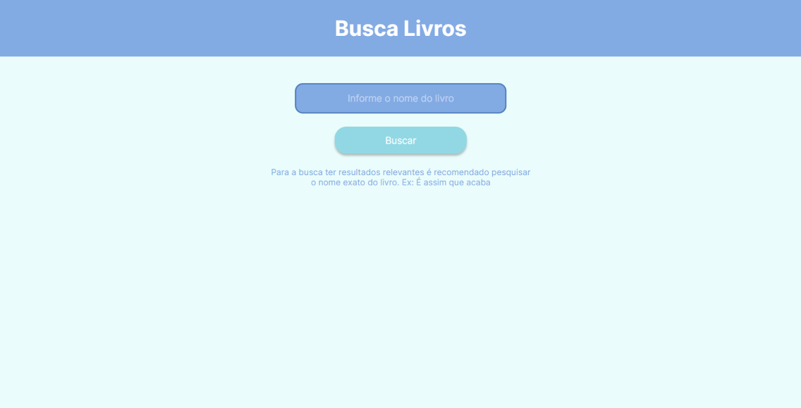
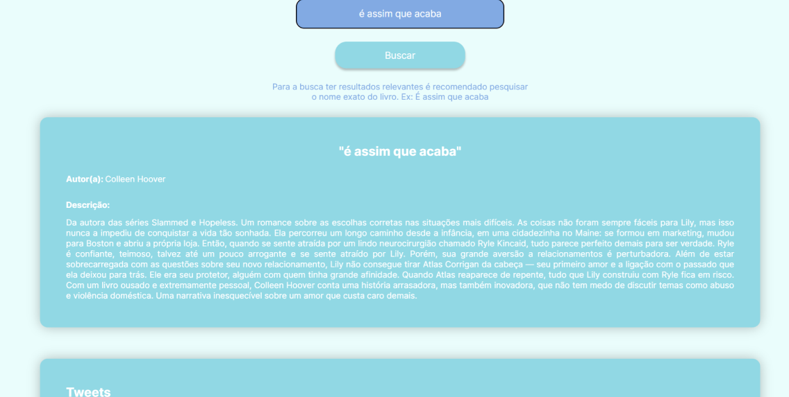
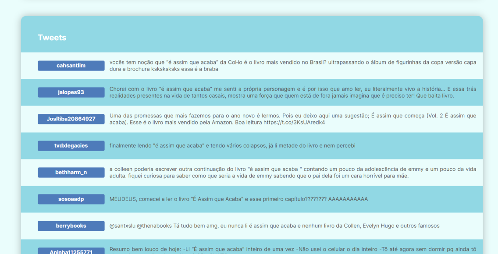

Apresentação do Projeto
O projeto tem como finalidade a busca de livros, trazendo informações como título, descrição e autor(a). Além disso, o programa também busca os principais tweets relacionados ao livro, para o usuário saber o que as pessoas estão comentando sobre o título na rede social.
Tecnologias Utilizadas
Para a construção da API foi utilizado Python e Flask.
A busca de livros é feita utilizando a API do Google Books e a busca de tweets é feita usando a API do Twiter com o auxílio da biblioteca tweepy.
O frontend foi feito usando HTML, CSS e Javascript.
Video de Demonstração
Prints das Telas


